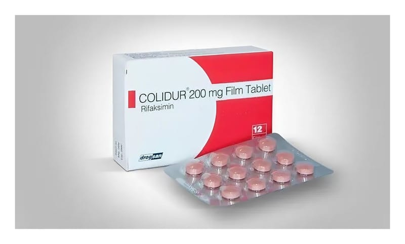

Colidur 200 mg Film Kaplı Tablet, 12 Adet

Ne için kullanılır
KT · Bölüm 1COLİDUR, 12 adet pembe renkli, konveks(dış bükey) yüzlü, yuvarlak film kaplı tablet içeren blister ambalajda sunulmaktadır. Her bir film tablet, 200 mg rifaksimin içerir. COLİDUR antibiyotikler olarak adlandırılan bir ilaç grubunda yer alır ve bağırsakta etkili antimikrobiyal bir ajan olarak kullanılan rifaksimin içerir. Şiddetli mide-bağırsak enfeksiyonlarında, Turist ishali (Yetişkinlerde rastlanılan, kanlı dışkı veya ateşin görülmediği, son
24 saat içinde 8 veya 8’ den fazla biçimsiz (sulu veya yumuşak) dışkının görüldüğü bir hastalık) durumunda, kandaki amonyak ve bileşimlerinin miktarı arttığı zaman kullanılan ilacın etkisini arttırmak amacıyla ve diyare baskın irritabl bağırsak sendromu (hassas bağırsak hastalığı) tedavisinde kullanılır. 18 yaş altındaki çocukların kullanması önerilmez.